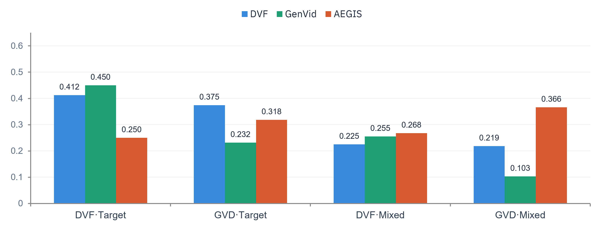
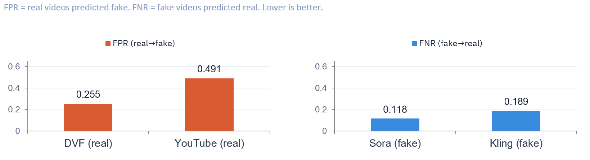

Detecting AI-generated video that holds up on generators it has never seen
Most published detectors ace their training data and quietly collapse on new generators. This thesis measures that failure honestly — then closes the gap.
Role
Sole researcher — M.S. thesis, University of Michigan
Goal
Cross-generator generalization for AI-video forensics
Key outcome
81% AUROC on held-out generators, +15% over baseline
AUROC on generator families held out from training (+15% vs single-source baseline)
0.219
lowest EER — DVF under mixed fine-tuning; DVF stays the most stable across all configs
~30k
videos · 7 generator families · trained on Great Lakes HPC via SLURM
$cat problem.md
The generalization failure most detectors hide
AI-video detectors are usually evaluated on the same generators they were trained on — where scores look great. On unseen generators, performance collapses. Worse, datasets carry shortcuts (frame-count, resolution) that inflate in-domain scores while destroying transfer. A detector that only works on last year's generators is useless in production.
$./approach.sh
01Built a spatiotemporal R(2+1)D detector and evaluated across 7 generator families (~30K videos) with held-out generators — the honest protocol.
02Audited per-generator AUROC during fine-tuning and traced degradation to catastrophic forgetting.
03Reduced it with mixed fine-tuning, generator-aware sampling, and SupCon fine-tuning.
04Neutralized dataset shortcuts via preprocessing — resolution standardization, temporal windowing, center crop, frame normalization, filename hashing — and confirmed with Grad-CAM that the model stopped using them.
05Prioritized EER over raw accuracy to reflect real deployment trade-offs.
$cat results.json
+81% AUROC on generator families held out from training — +15% over a single-source baseline
+DVF reaches the lowest EER of the three datasets — and mixed fine-tuning drives it down to 0.219
+Shortcut removal verified with Grad-CAM — scores reflect real signal, not dataset artifacts
+Published as an open-access thesis (University of Michigan)

Fig 1 — EER by evaluation dataset (lower is better). Across configurations, DVF holds the lowest and most stable EER, bottoming out at 0.219 under mixed fine-tuning — evidence the detector transfers rather than memorizing one generator's artifacts.

Fig 2 — error breakdown (lower is better). FPR stays low on DVF-real (0.255); FNR on unseen fakes is a minimal 0.118 (Sora) / 0.189 (Kling) — the model rarely lets a generated video through.